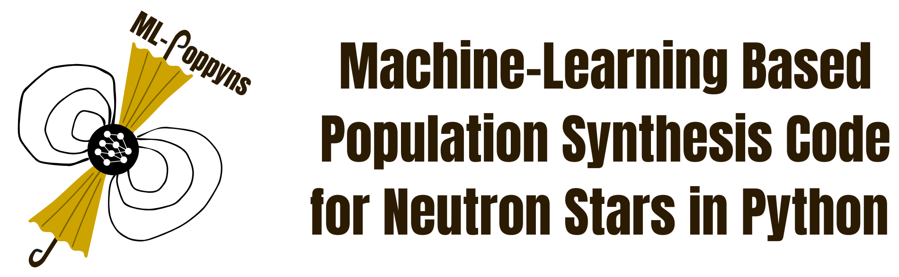
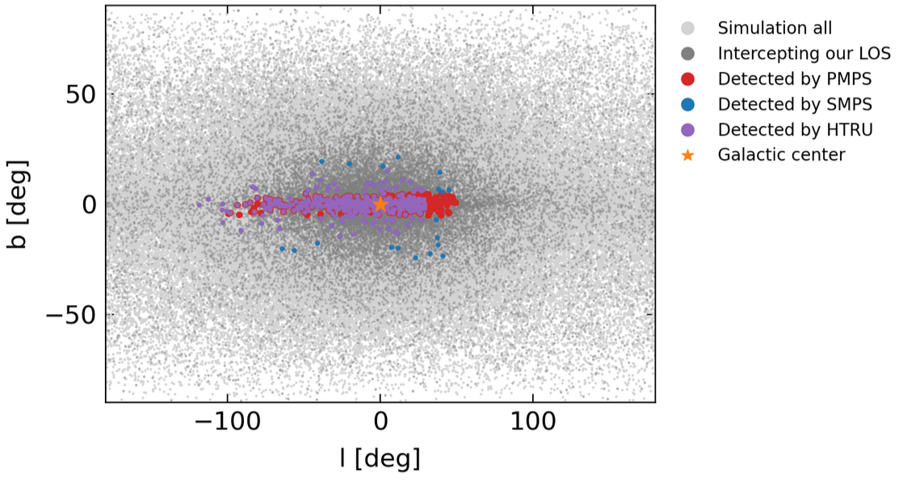
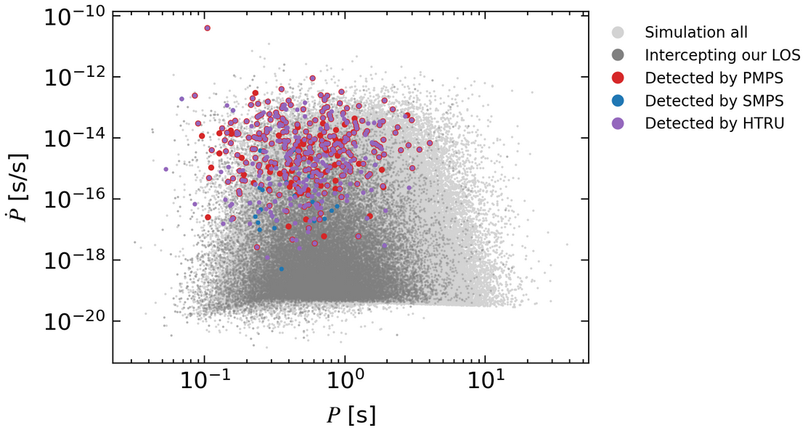

Overview
Our population synthesis framework models the birth properties and evolution of the population of isolated Galactic neutron stars. The population synthesis is integrated with a deep learning pipeline to perform parameter inference and constrain the neutron stars' physical properties.
We can simulate a population of neutron stars and model their detection across three different surveys performed with Murriyang, the Parkes Radio Telescope, with just a few steps:
import argparse
from mlpoppyns.simulator.config_simulator import cfg
from mlpoppyns.simulator.simulate_population_full import simulate_population
# Setting up some simulation parameters.
cfg["NS_number"] = 300000
cfg["t_age_max"] = 3.0e7
cfg["B_initial_log10_mean"] = 13.1
cfg["B_initial_log10_sigma"] = 0.45
cfg["P_initial_log10_mean"] = -1.0
cfg["P_initial_log10_sigma"] = 0.38
simulation_args = argparse.Namespace(
save_dir="output_dir",
parameter_override=None,
)
simulate_population(simulation_args)
- the Parks Multibeam Pulsar Survey (PMPS; Manchester et al. 2001, Lorimer et al. 2006),
- the Swinburne Parkes Multibeam Pulsar Survey (SMPS; Edwards et al. 2001, Jacoby et al. 2009),
- the mid- and low-latitude High Time Resolution Universe survey (HTRU; Keith et al. 2010).
The distributions of these pulsars in the sky and in the P-\dot{P} plane are as follows:


Example
More details on this simulation can be found in the tutorial
tutorials/tutorial_notebooks/00_getting_started.ipynb.
Repository structure
Tip
We recommend you read through this page to familiarize yourself with the structure of the code elements before moving on to the Getting started page.
Main code modules
The repository is structured in a modular way to allow for easy adjustments and additions as we continue to improve our software package.
The main folder is mlpoppyns which contains three subfolders: simulator, generator, and learning.
-
The
simulatorsubfolder contains all the modules and scripts necessary to simulate a population of synthetic neutron stars. We group modules according to their physics, i.e., separating those that are associated with the dynamical evolution, the magneto-rotational evolution, the emission in different electromagnetic wavelengths and the modelled surveys. -
The
generatorsubfolder acts as the link between the physics and the machine-learning algorithms. It contains all the modules and scripts necessary to represent our mock neutron star population in a way that is suitable for the machine-learning pipeline. We can, for example, represent the stars' properties as density and feature maps. -
The
learningsubfolder contains all the modules and scripts necessary for the machine-learning pipeline, including model architectures, initialization techniques, loss function definitions, training schemes and so on.
Example data
The data folder contains various subfolders with example data created by running different simulator scripts, the
generator script and the training and inference scripts, an observations subfolder and a paper_results subfolder.
Each directory contains a README.md file with instructions on how to produce a specific dataset.
Note
All the simulation examples provided in the data directory were computed using the default parameters
specified in the configuration file mlpoppyns/simulator/config_simulator.py.
-
The
example_generator_magrotsubfolder contains an example dataset of feature maps from simulated populations. -
The
example_generator_observedsubfolder contains an example dataset of feature maps from the observed pulsar population in the ATNF catalog and Meerkat TPA program. -
The
example_inference_nnsubfolder contains the results of an inference run with a convolutional neural network (CNN) on some test simulated data. -
The
example_inference_sbisubfolder contains the results of an inference run with sbi on some test simulated data. -
The
example_learning_nnsubfolder contains the results of a training run with a CNN on some training simulated data. -
The
example_learning_sbisubfolder contains the results of a training run with sbi on some training simulated data. -
The
example_posterior_samples_harmonicsubfolder contains unnormalized posterior samples from SNLE training to be used with the Harmonic package for model comparison. -
The
example_simulation_dynsubfolder contains the results of the dynamical evolution of a population of neutron stars obtained by running the scriptmlpoppyns/simulator/simulate_population_dyn.py. -
The
example_simulation_full_edmsubfolder contains the results of a full simulation (dynamical + magneto-rotational evolution + detection) of a population of neutron stars obtained by running the scriptmlpoppyns/simulator/simulate_population_full.pyand by using themlpoppyns/simulator/initial_population_edm.pymodule to set up the initial conditions. -
The
example_simulation_full_samsubfolder contains the results of a full simulation (dynamical + magneto-rotational evolution + detection) of a population of neutron stars obtained by running the scriptmlpoppyns/simulator/simulate_population_full.pyand by using themlpoppyns/simulator/initial_population_sam.pymodule to set up the initial conditions. -
The
example_simulation_helper_magrotsubfolder contains the results of 20 simulations obtained by running the scriptutilities/experiment_helpers/run_simulation_set.pyand using themlpoppyns/simulator/simulate_population_magrot_det.pysimulator. -
The
example_simulation_magrot_detsubfolder contains the results of a simulation of magneto-rotational evolution and detection of a population of neutron stars obtained by running the scriptmlpoppyns/simulator/simulate_population_magrot_det.py. -
The
observationssubfolder contains catalogs with observed data. -
The
paper_resultssubfolder contains data results for our publications.
Documentation files
The folder docs contains all the necessary files to produce the documentation.
Plots from related publications
The paper_plots folder contains the notebooks to generate the plots and figures in our papers:
-
Analyzing the Galactic Pulsar Distribution with Machine Learning, Ronchi et al. 2021
-
Isolated Pulsar Population Synthesis with Simulation-based Inference, Graber et al. 2024
-
Radio pulsar population synthesis with consistent flux measurements using simulation-based inference, Pardo-Araujo et al. 2025
Tutorials
The directory tutorials contains two subfolders with jupyter notebooks with examples to run the simulator, generator
and learning scripts and analyze the simulations output.
-
analysis_notebookscontains some analysis Jupyter notebooks that can be used to plot the distributions and features of a simulated population of neutron stars as well as its evolution in time. The main purpose of these notebooks is the ability to check the output of the physical models used in the simulations and to compare a mock population with the real distribution of observed pulsars. -
The
tutorial_notebookssubfolder contains some notebooks to launch simple examples of the simulator, generator and learning scripts.
Tip
For instructions on how to use the tutorials, see the simulator tutorial and so on, once you have worked through the Getting started page.
Useful Python scripts
The directory utilities contains some additional python modules and scripts for profiling our code, running
simulations at our computing cluster at PIC, launching several simulations automatically and performing a parameter
sweep, sampling distributions or dataframes, performing statistical analysis and plotting settings.
Citation
If you use ML-Poppyns in your research, we kindly ask you to:
-
Cite the following publications in the text:
-
Analyzing the Galactic Pulsar Distribution with Machine Learning, Ronchi et al. 2021
-
Isolated Pulsar Population Synthesis with Simulation-based Inference, Graber et al. 2024
-
Radio pulsar population synthesis with consistent flux measurements using simulation-based inference, Pardo-Araujo et al. 2025
-
Add the following sentence in the acknowledgment section of your publication: "ML-Poppyns has been funded by the European Research Council via the ERC Consolidator grant 'MAGNESIA' (No. 817661; PI: N. Rea)."
Contacts
If you encounter any issues or have questions, please feel free to email us at ml-poppyns@ice.csis.es.